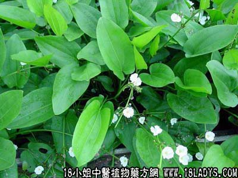

何首乌(中草药名称:生首乌)(科目:蓼科)

【中药概述】
何首乌为蓼科草本植物何首乌的块根。苦、甘、涩，微温。归肝、肾经。
1．滋肝养血：用于补肾益精，血虚萎黄、头目眩晕，腰膝酸软，遗精带下等，可熟地，牛膝等同用；
2．补肝益肾：用于肝肾不足、头目眩晕、须发早白等，如（七宝美髯丹）、（乌发丸）。
3．截疟：用于久疟、通便、解毒等，如（<景岳全书>何人饮）、（何首乌散）。
【药效鉴别】
何首乌生则味苦，制则甘味更甚。且药性温和，不燥不腻，有补虚扶正之力，而为滋补纯良之品。
【药理作用】
1.有降血脂、降胆固醇，改善冠状动脉硬化作用；2.对血糖有先升后降作用；3.有兴奋心肌作用；4.可促进肠管蠕动，有泻下作用。
【化学成分】
大黄酚、大黄素，其次为大黄酸、大黄素甲醚、大黄酚蒽酮及大黄甙等。
【用量用法】
10——15g，水煎服。
【使用注意】
脾虚湿盛者不宜。
【注】
何首乌呈团块状或不规则纺锤形。表面红棕色或红褐色。两端各有一个明显的根痕，露出纤维状维管束。切断面黄棕色，有粉性，皮部散列“云锦状花纹”。
【附】
白首乌（为萝摩科植物牛皮消及白首乌的干燥根）。甘，微苦，微温。具补肝肾，益精血，强筋骨，止心痛，并兼有健脾益气的功能。5～12g，水煎服。
【化学成分】
含白薇素，有强心甙反应。
【注】
呈长圆柱形或长纺锤形。表面土黄色或淡黄棕色。断面类白色。
本文解释权归中药大全，本文地址： https://www.daquan.com/post/1773.html